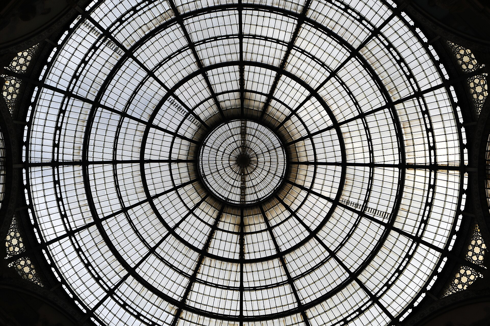
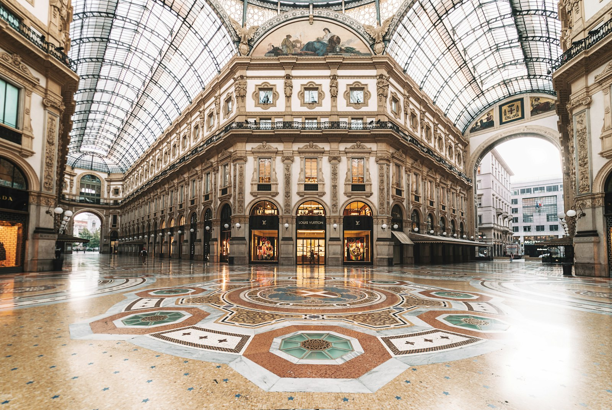

1865-1877 年建成的十字形玻璃拱廊，高 47 米的中央穹顶下是马赛克地面与百年老店。它是欧洲第一条现代购物拱廊、“米兰客厅”，也是从大教堂到斯卡拉歌剧院的必经之路--公牛 mosaic 的私处已被全世界的鞋底磨出一个坑。
看点路线
Il Percorso
- 1中央八角穹顶下仰拍：四大洲与四季马赛克
- 2找公牛 mosaic：脚跟踩“要害”转三圈许愿
- 3Caffè Biffi（1867）与 Savini（1867）喝一杯开胃酒
- 4从北口出去正对斯卡拉歌剧院--长廊本来就是它的“前厅”
长廊看点
La Galleria · 4 个细节

公牛马赛克与凹坑
都灵公牛的 mosaic 代表四座意大利古都之一（另三城：罗马狼、佛罗伦萨百合、米兰十字）。传说脚跟踩住公牛“要害”原地转三圈能带来好运--那个部位已被磨出一个直径半米的坑，每天有几百人来“上油”。

八角玻璃穹顶
高 47 米的中央穹顶是钢铁与玻璃的早期宣言：工业时代的材料第一次撑起教堂级的空间。十字拱廊的四臂各指向一个方向--大教堂、斯卡拉、南门与北门，它是城市的中转客厅，不是商场。

四大洲与四季
地面马赛克拼出亚洲、非洲、欧洲、美洲（19 世纪世界观）与春夏秋冬，中央是意大利之鹰与统一王国的徽章。低头看路：你踩的是 1870 年意大利人的世界观地图。
百年老店
Caffè Biffi 与 Savini 都开于 1867 年（前者是“开胃酒 aperitivo 文化”的重要现场）；Prada 1913 年在此开张第一家店（今仍在原址）。长廊的店租一个世纪以来都是全意大利最贵--它是米兰“排面”的物理地址。
历史故事
Le Storie
壹设计师之死
长廊设计师朱塞佩·门戈尼构想的不仅是一条商业街，而是一座“市民大教堂”--玻璃穹顶对应教堂中厅，马赛克对应圣像地画。
1877 年 12 月 30 日，就在落成典礼前几天，门戈尼从 47 米高的穹顶脚手架上坠落身亡。官方结论是意外，坊间一直有“自杀”传闻（工期纠纷与债务压身）。
三年后，门戈尼的雕像被安放在长廊入口的檐壁上。米兰人每天从他脚下走过--把这条“客厅”同时当作他的墓志铭。
贰从“国王长廊”到“米兰客厅”
长廊以意大利统一后第一位国王维托里奥·埃马努埃莱二世命名，落成时是欧洲最大的玻璃拱廊。国王本人出席了奠基--他喜欢把这里称为“我的客厅”。
20 世纪它经历过衰落与轰炸（1943 年部分受损），战后在“米兰经济奇迹”中复兴。1967 年起的咖啡馆文化让它成为 aperitivo 的宇宙中心。
2019 年后奢侈品旗舰店进一步集中，但本地人依然只把这里当“通道”使用：游客在许愿，本地人在赶路，两种速度在同一块马赛克上达成和解。
叁公牛的“要害”与那个坑
都灵公牛的地面马赛克代表四座意大利古都之一（另三城：罗马狼、佛罗伦萨百合、米兰十字）。
传说脚跟踩住公牛“要害”原地转三圈能带来好运--那个部位已被磨出一个直径半米的坑，每天有几百人来“上油”。修复工人每隔几年就要把坑磨平，然后它再被踩凹。
这个仪式的起源成谜（一说来自 1960 年代的电影取景玩笑），但它可能是全意大利参与人数最多的“日常迷信”。
肆四大洲与四季的马赛克
地面马赛克拼出亚洲、非洲、欧洲、美洲（19 世纪世界观）与春夏秋冬，中央是意大利之鹰与统一王国的徽章。
低头看路：你踩的是 1870 年意大利人的世界观地图--美洲的野牛与非洲的狮子在十字穹顶下各占一象限。
穹顶四拱肩的科学、艺术、农业与工业四 allegory 呼应地面--整套地画是一份“新国家的自我介绍”。
伍Caffè Biffi 与 aperitivo 的发明
Caffè Biffi（1867）与对面的 Savini 同岁--两家都自称“米兰开胃酒文化”的摇篮。
当年的规矩：站着喝（在吧台）、点一杯 Negroni 或 Americano、配柜台的小食--这个“站着社交”的模式后来演化为全意大利的 aperitivo。
今天 Savini 的吧台价格已是天价，但站吧台的小杯 Espresso 依然亲民--一百五十年没变的是“站姿折扣”。
陆Prada 的“原址原店”
Prada 1913 年在长廊开张第一家店--今天的旗舰店仍在原址（Galleria 75 号），门口的英文与意大利文双招牌是品牌史的地标。
马里奥·普拉达当年卖的是皮具与进口奢侈品；孙女缪西亚 1978 年接手后把它变成全球时尚的语言。
橱窗一年换八次以上--长廊的“博物馆展线”里，这是唯一常换常新的展厅。
柒十字与四臂的“城市枢纽”
长廊的十字四臂各指向一个方向：南臂接大教堂广场、北臂对斯卡拉歌剧院、东西两臂通金融街与购物区--它是米兰的“城市客厅兼中转枢纽”。
这个选址逻辑 150 年未变：从大教堂到斯卡拉的“朝圣路线”必经此地。门戈尼的设计把“通道”升格为“目的地”。
看地面中央的“八角”位置：四个象限的人流在此交汇--站十分钟，能听到十种语言与一位街头钢琴师。
捌二战与“被打碎的穹顶”
1943 年 8 月的米兰大轰炸中，长廊的玻璃穹顶部分被震碎--历史照片里，八面体的骨架下挂着残破的玻璃，商铺用木板封门。
战后的修复按原样补配玻璃与铁构--今天抬头看穹顶，新旧玻璃的轻微色差仍可辨认（仔细看东南一侧）。
它是这座城市“修复主义”的微型标本：米兰人不重建得更现代，而是修回原来的样子--连同它的伤疤。
玖“转圈”的当代仪式
今天的公牛转圈已发展出完整“仪式学”：逆时针三圈（一说顺时针）、许愿内容不限、转完必须拍照存证。
人类学家研究过这个现象：一个无官方背书的迷信，如何通过旅游手册与短视频自我复制--公牛坑是“集体记忆的磨具”。
排队的最佳时段是清晨 9 点前与深夜--深夜的长廊空旷、灯光下独自转圈的画面，是米兰最安静的幽默。
拾从长廊到斯卡拉的“四分钟”
从南口（大教堂）走到北口（斯卡拉广场）只要四分钟--这四分钟是米兰密度最高的“穿越”：哥特大教堂、19 世纪玻璃拱廊、新古典歌剧院与 20 世纪摩天楼同框。
斯卡拉广场上有达芬奇像（他是米兰文艺复兴的“总工程师”）--长廊北口出门正对，像一场跨越 400 年的交接仪式。
把这四分钟走慢一点：门戈尼与达芬奇、国王与裁缝，都在这条动线上值过班。
参观贴士
Consigli Pratici
- 傍晚 17:30-19:00 长廊 aperitivo 氛围最佳（Savini 站吧台比坐省一半）
- 公牛转圈排队高峰在午后，清晨 9 点前随到随转
- 从南口（大教堂）到北口（斯卡拉）步行 4 分钟--把斯卡拉广场与歌剧院博物馆串进动线
- 奢侈品店周一上午与周日常闭/短营业，购物请安排在周二至周六
- 长廊与大教堂广场交界处扒手密集，背包前置
- 在长廊拍照建议傍晚：穹顶玻璃透进暮光，马赛克地面反光
顺路同游
Da Non Perdere